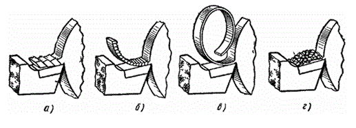
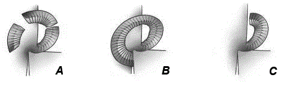

При обработке резанием превращение срезаемого слоя в стружку является одной из разновидностей процесса пластического деформирования материала, изменение под действием внешних сил формы материала без его разрушения. Срезаемые стружки имеют различные вид и форму которые зависят от химического состава, структурного состояния металла, режимов резания, геометрии режущего инструмента и пр. Основными факторами, влияющими на форму стружки, являются глубина резания и подача. Глубина резания влияет на ширину стружки, следовательно, и на ее форму.
Удовлетворительной считается стружка в виде коротких спиралей и запятых. Важную роль в процессе стружкообразованию играют главный угол в плане и радиус при вершине пластины. При разной глубине резания одна и та же режущая пластина будет образовывать и ломать стружку разными способами.
Впервые классификация стружки была предложена И.А. Тиме, все виды стружки были разделены по внешнему виду и строению на три основных группы: сливная стружка, стружка скалывания или суставчатая, стружка надлома.
Если обрабатываемый материал хрупок (чугун, бронза), то стружка получается в виде отдельных мелких кусочков неправильной формы (рисунок 1, г) такая стружка называется стружкой надлома. Если обрабатывается пластичный металл (мягкая сталь, алюминий), то отдельные элементы не отделяются друг от друга и стружка сходит с резца в виде ленты, завивающейся в спираль (рисунок 1, в), такая стружка называется сливной. При обработке металлов средней твердости образуется ступенчатая стружка (рисунок 1, б), она состоит из отдельных элементов соединенных между собой. Внутренняя поверхность такой стружки (обращенная к резцу) гладкая, а внешняя сторона ступенчатая. При обработке металлов средней твердости с очень малой скоростью резания образуется элементная стружка (рисунок 1, а), она состоит из отдельных деформированных элементов на связанных между собой.
Обеспечение образования короткой, легко удаляемой стружки особенно важно при высоких режимах резания, когда в единицу времени образуется большой объем стружки и необходимо обеспечить безостановочную работу оборудования и безопасность оператора.
Известны четыре основных вида стружколомания:
А. Стружка ломается в процессе резания, благодаря правильно выбранным для данного обрабатываемого материала геометрии инструмента и параметрам режима резания.
Б. Стружка ломается от соприкосновения с задней поверхностью режущей пластины или корпуса резца. Такой метод, хотя и приемлем в ряде случаев, может привести к поломке режущей пластины.
С. Стружка ломается при контакте с обрабатываемой деталью, что может привести к увеличению шероховатости обрабатываемой поверхности, чаще всего данный способ неприемлем.
Д. Стружка ломается о специальный стружколом, прикрепленный на режущий инструмент или станок.